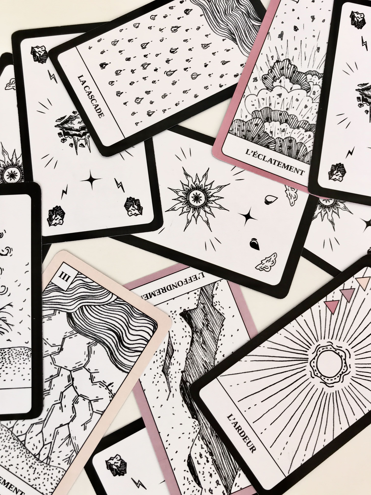
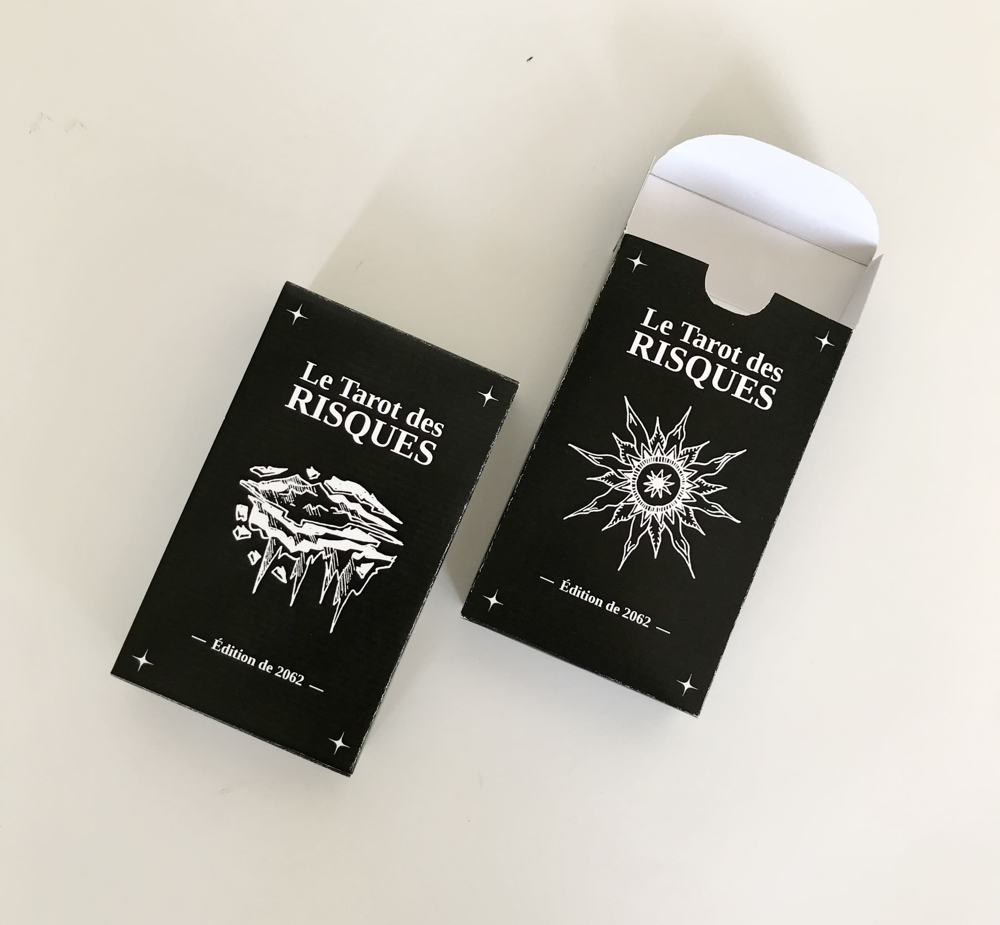
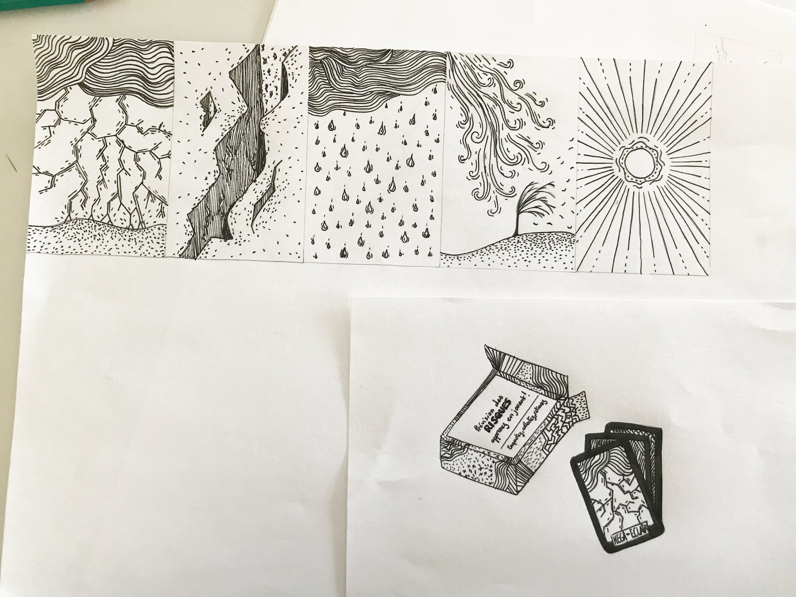
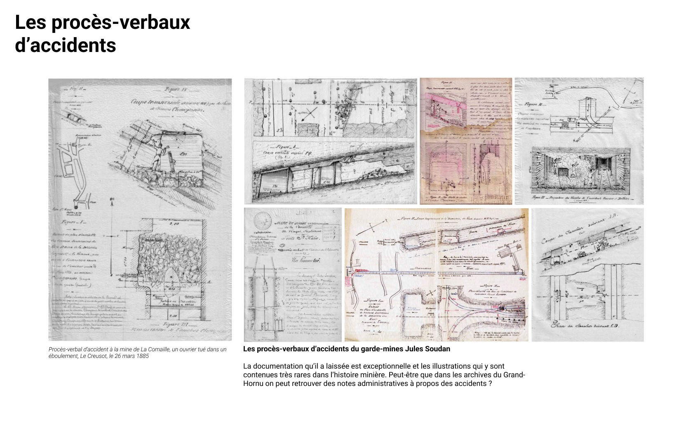
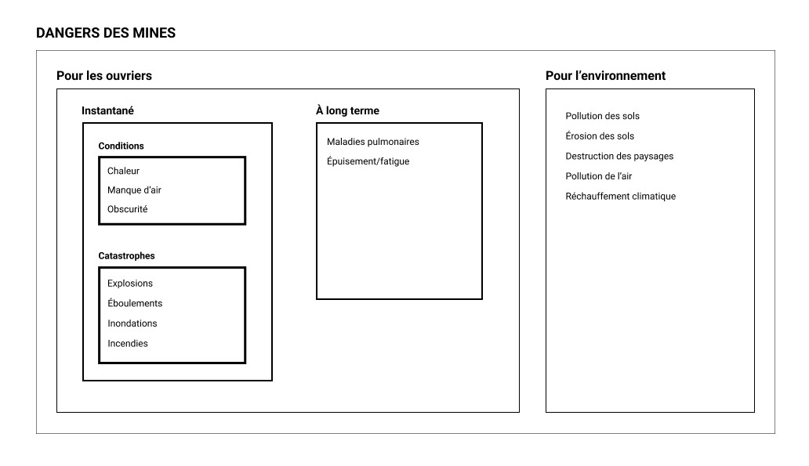
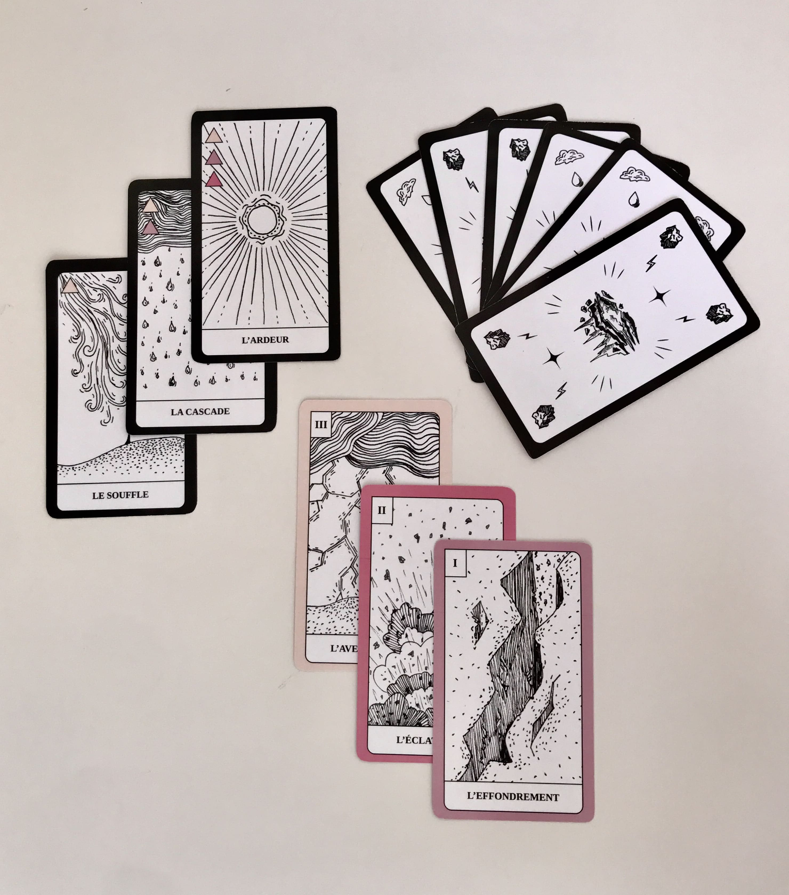
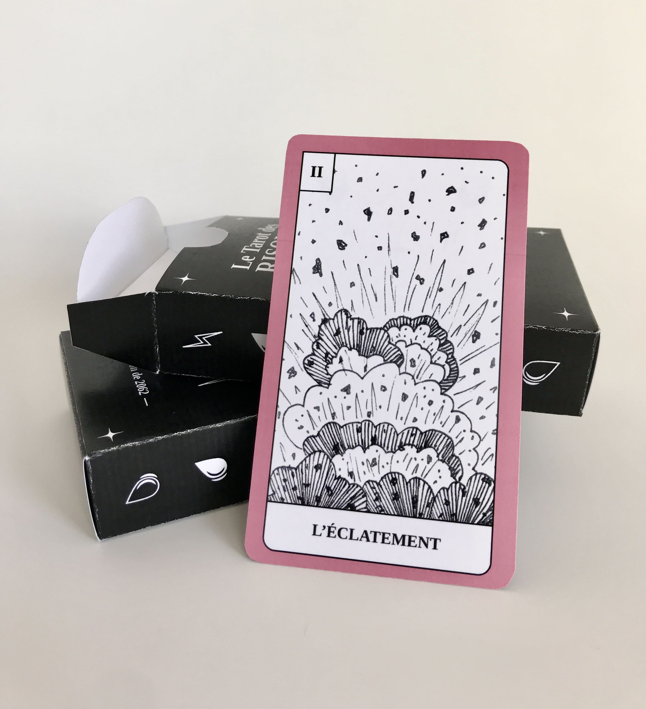
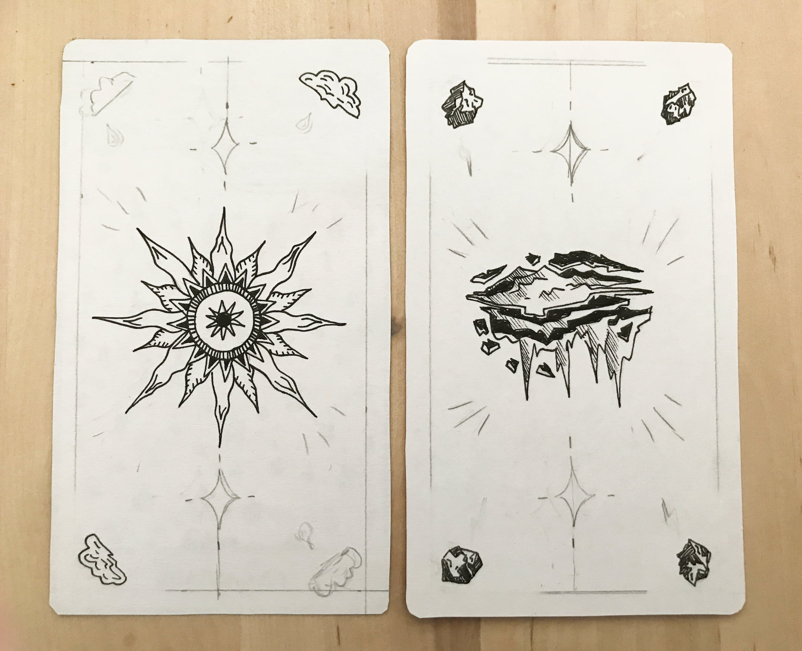
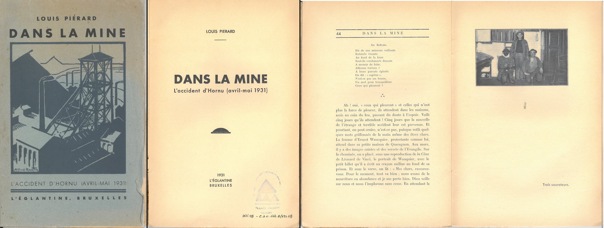
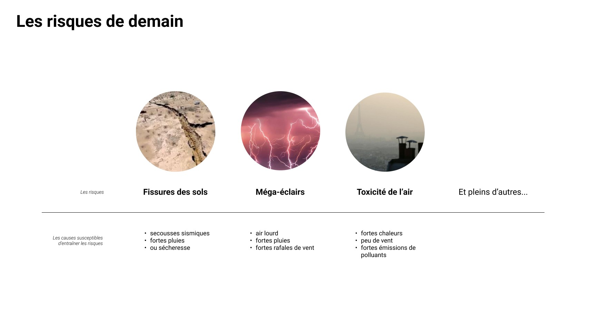

Tarot des Risques
Design fiction - Jeu - Illustration
CID Grand-Hornu : Jeu de Tarot pour l'exposition Au charbon !
S'appuyer sur les archives du site minier du Grand-Hornu, pour produire un objet-fiction qui sera mis en scène dans une fausse boutique de souvenirs. L'objet va questionner un futur "alter-extractiviste".
Le Tarot des risques existe dans un futur où les catastrophes naturelles se multiplient à cause du changement climatique, de plus en plus fortes et fréquentes. On doit vivre toujours en alerte, être préparés à réagir, comme les mineurs. On doit être en permanence au courant de l’état de l’environnement pour prévoir les risques. Cet objet-fiction pose question sur notre quotidien du futur. À quoi ressembleront le climat et les catastrophes naturelles de demain ?









